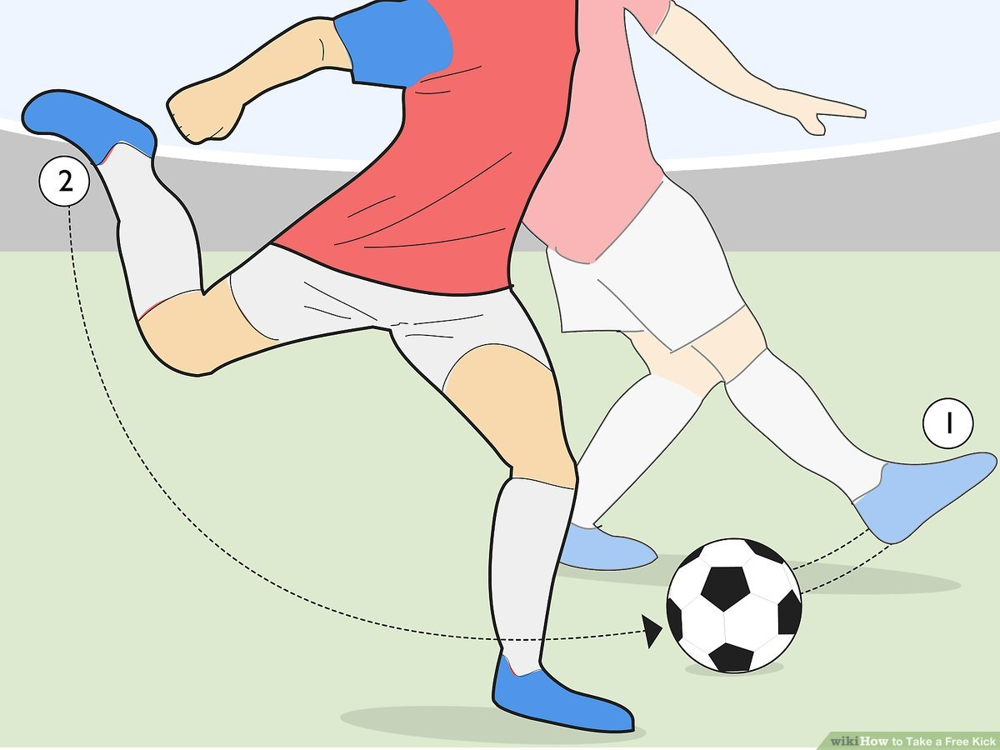

Final Project Proposal
Here are at most 3 ideas for my final project:
Idea 1: SmartCleat
When playing soccer, mastering free kicks and shooting in general involves striking the ball with precise areas of your foot to achieve the desired technique, spin, speed, power, etc. SmartCleat aims to revolutionize this aspect of training by integrating advanced sensors into soccer cleats. These sensors will accurately detect the exact site of the ball’s impact on the cleat, providing real-time feedback to players about their striking technique. This feedback allows players to continually adjust where they are striking the ball to help them enhance their technique. Additionally, if time permits, SmartCleat can be further developed to include sensors for monitoring gait, posture, and pressure distribution. This expanded functionality has implications for preventing injuries and player comfort.
Idea 2: PillTrack Pro

As someone who frequently gets sick, remembering to take all of my medication on time has always been a major challenge. This inspired my idea for PillTrack Pro, an automated medication adherence device designed to revolutionize prescription management. PillTrack Pro will leverage RFID technology and sensors to meticulously track medication usage, recording both the exact timing and quantity of each dose. The device will alert patients when it's time to take their medication and notify caregivers if any doses are missed. Additional features may include refill reminders and telemedicine integration. Additionally, I am also envisioning a corresponding application that will provide healthcare providers with real-time medication adherence data, helping them to make more informed adjustments to patient treatment plans.
Idea 3: Automated Web Shooter

As a Queens native, Spider-Man has always been one of my all-time favorite superheroes. To capture the thrill of web-slinging, I propose creating an automated web shooter that simulates the action of shooting and retracting web-like threads. This device will use a spool system to house the web material, with a small motor or servo responsible for extending and retracting the threads. The web shooter will be controlled by a wearable trigger system integrated into a glove or wristband, equipped with pressure and motion sensors. These sensors will detect hand movements and pressure, sending signals to control the timing and force of the web deployment. With this project, I’m hoping to live out my childhood dream of becoming the next Spider-Woman!